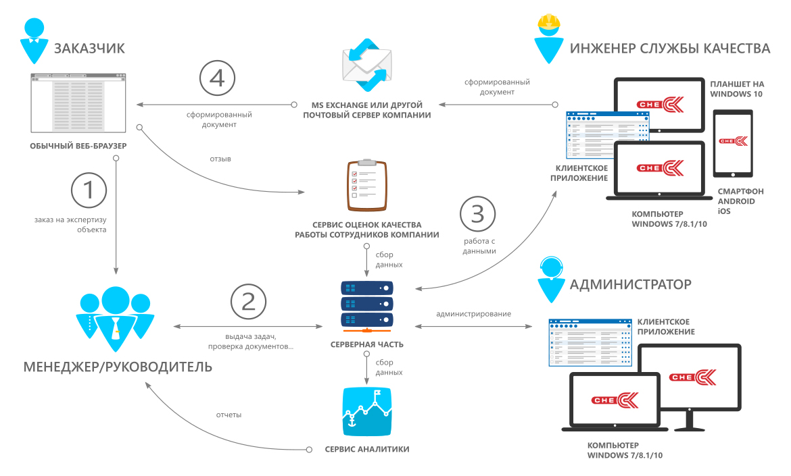
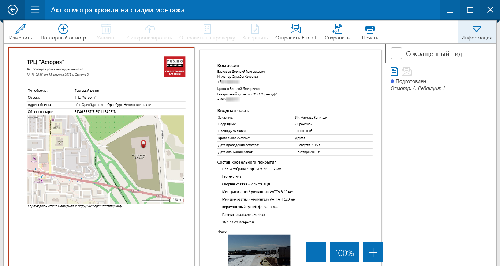
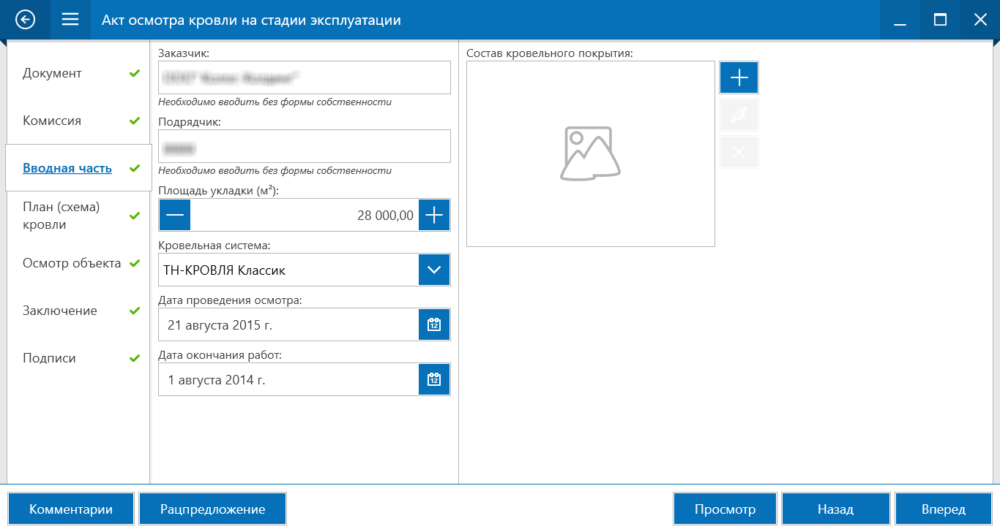
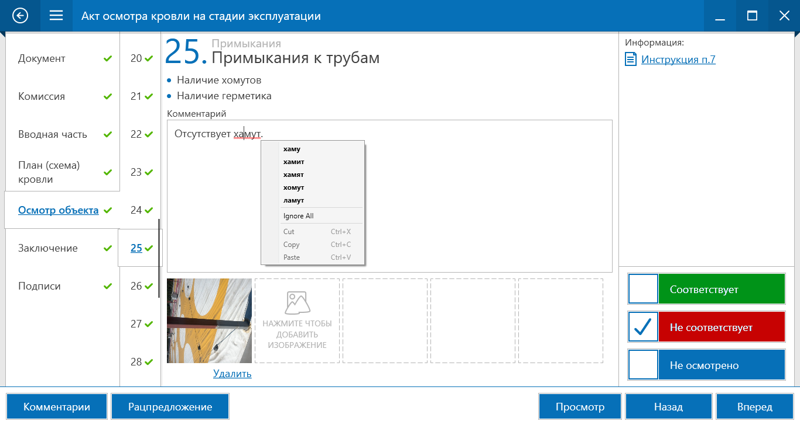
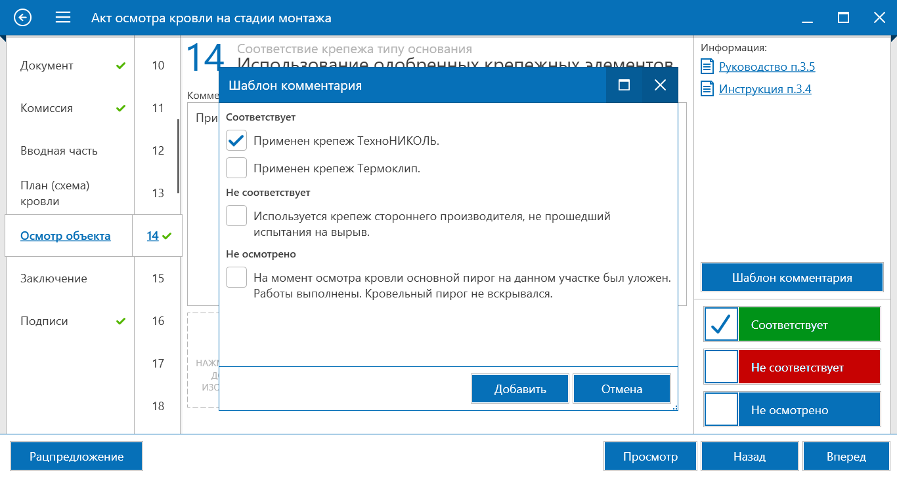

Technonicol cheCK
Разработка ПО для отдела контроля качества строительства
Информация о проекте
cheCK - это программный комплекс, разработанный нашей командой "под ключ" для нужд отдела контроля качества компании Технониколь.
ПО успешно функционирует и развивается с 2014 года.
Решение позволяет: проводить контроль качества объектов и продукции инженерами компании, формировать сопутствующий документооборот, проводить аналитику по данным, выявлять статистику наиболее частых нарушений, улучшать качество строительных работ и/или продуктов предприятия, логистику, безопасность труда и эффективность работы сотрудников.
Заказчик
ТЕХНОНИКОЛЬ — Крупнейший производитель строительных материалов и систем. 53 производственные площадки в семи странах мира. 22 представительства в 18 странах. Более 100 торговых отделений в России и СНГ.
Цели разработки
Упростить создание документов “В полях” сотрудниками организации.
Привести учет документации к единому формату.
Централизовать учет документов, хранить их в единой базе данных.
Составить календарный план занятости сотрудников и автоматизировать выставление задач.
Создать единую базу рацпредложений по улучшению качества работ и продукции.
Упростить и централизовать взаимодействие с заказчиками.
Контролировать качество работ сотрудников.
Проводить аналитику по собранным данным.
Схема проекта

Выполненные задачи
Техническое задание на проект.
Клиентское приложение для планшетов и настольных компьютеров.
Административное приложение для настроек.
Серверная часть: Sharepoint портал.
База данных строительных систем, руководств, документов и отчетов службы качества.
XML структура шаблонов документов (актов, ведомостей и отчетов), позволяющая добавлять всё больше функционала в проект без необходимости программирования.
Генератор отчетов по осмотрам объектов.
Сайт для отзывов клиентов.
Взаимодействие с другими сервисами компании.
Работа на объекте
Для работы "в поле" инженеру по контролю качества понадобится планшет на Windows 10 или смартфон на Android/iOS. Приложение поддерживает полную offline работу (если доступ к интернету ограничен, программа синхронизирует данные с сервером позже).
Документ полностью создаётся на устройстве, в том числе подписи комиссии и заказчика можно оставлять стилусом. При работе на паншете пользователь может использовать такие опции как: рукописный ввод текста, добавление фото осматриваемых частей объекта с камеры, автоматическое геопозиционирование на карте.
Можно создавать документы на стационарном компьютере или ноутбуке, посетив объект с фотоаппаратом и записной книжкой. Для некоторых осмотров есть необходимость использовать фотоаппарат с качественным "зумом" (например, при осмотре фасадов здания).
После создания отчета, в зависимости от прав пользователя, можно его отправить заказчику на почту (интеграция c сервером компании MS Exchange), либо отправить на проверку своему руководителю (совместная работа над документом).
Аналитика по данным
По итогам аналитики можно снизить затраты, выявить уязвимые места производства материалов или неэффективность строительных работ, увидеть тенденции рынка, оптимизировать работу сотрудников.
В несколько кликов мышкой получаем, например, вот такой отчет:
Конструктор шаблонов
Благодаря шаблонам печатных форм можно создать любой вид "бумажного" документа, подстроившись под фирменные бланки компании или бланки гос. образца.
Регламенты осмотра создаются как XML шаблоны, под которые автоматически подстраивается редактор осмотров в приложении и дизайнер отчетов (его видно на скриншоте). В дальнейшем шаблоны регламента и документа можно изменять, добавлять новые, блокировать устаревшие. Шаблоны документов являются "Фишкой" ПО, они позволяют подстроиться под специфику различных сфер деятельности контроля качества: кровля, фундамент, стены, фасады, реконструкция и т.п.
Планшетное приложение
Главное меню
Стартовый экран приложения показывает доступные пользователю модули (в зависимости от его роли).
Меню спроектировано таким образом, чтобы можно было расширять ПО новыми функциями.
Панель администратора доступна только определенным группам пользователей (полностью или частично).
Осматриваемые объекты
По любому объекту можно создать документ (акт осмотра), задачу или рацпредложение.
Положение на карте определяется автоматически (GPS, ГЛОНАСС).
Адрес объекта формируется на основе данных базы ФИАС.
Список документов
Просмотр подготовленного документа
Генерация постраничного вида для документов с большим количеством фотоматериалов.
Полный и сокращенный вид документа (настраивается в шаблоне).
Сохранение в PDF и печать.
Синхронизация изменений с сервером для работы на других устройствах и совместно.
Отправка документа на E-mail.
Просмотр заметок от руководителя (в случае совместной работы).

Редактор документа
Структура документа и функции редактора формируются автоматически из выбранного пользователем шаблона.
Редактор поддерживает горизонтальную и вертикальную ориентации экрана.
Автоматическое сохранение изменений.
Проверка орфографии.
Работа "в поле" и в офисе
Редактор: Типовые секции документа
Количество секций, типы и набор полей в них определяются в шаблоне документа.
Поддерживаются: текстовый ввод (с валидацией), поля дат, ввод чисел, вставка одного или группы изображений, поля для комментариев, выбор из справочников.

Редактор: Секция осмотра
Быстрое добавление фото.
Инструкции и руководства всегда под рукой.
Автоматическое добавление текста комментариев из шаблонов.


Редактор: Секция комиссии
Все ответственные лица автоматически попадают в комиссию.
Подписи добавляются прямо на объекте стилусом (реакция на нажим и наклон, если позволяет стилус).
Подписи хранятся в зашифрованном виде и не могут быть использованы повторно.
Фоторедактор
Добавление фотографий с камеры или из файла.
Масштабирование, поворот и перемещение изображения.
Простой редактор для выделения важных деталей.
Рациональные предложения
Модуль предназначен для сбора предложений по улучшению качества продукции компании, по способам работы и монтажа, неэффективности решений и т.д.
При добавлении рацпредложения пользователь может добавлять текстовые и фото материалы.
Изучая данные предложения, можно существенно повысить эффективность и качество работы.

Просмотр руководств и инструкций
Администратор может загружать любые PDF документы в базу знаний.
Ссылку на конкретную страницу руководств можно вставить в любом месте шаблона.
Пользователь всегда может обратиться к любой справочной информации с главной страницы приложения.
В приложении ещё много различных функций, не попавших в эту презентацию.
Ниже вы найдёте наши контакты и ссылки на социальные сети, подписывайтесь и не стесняйтесь задавать вопросы.
-
 Диспетчерская служба
Диспетчерская служба -
 РусГидро Центр мониторинга
РусГидро Центр мониторинга -
Vision оценка недвижимости